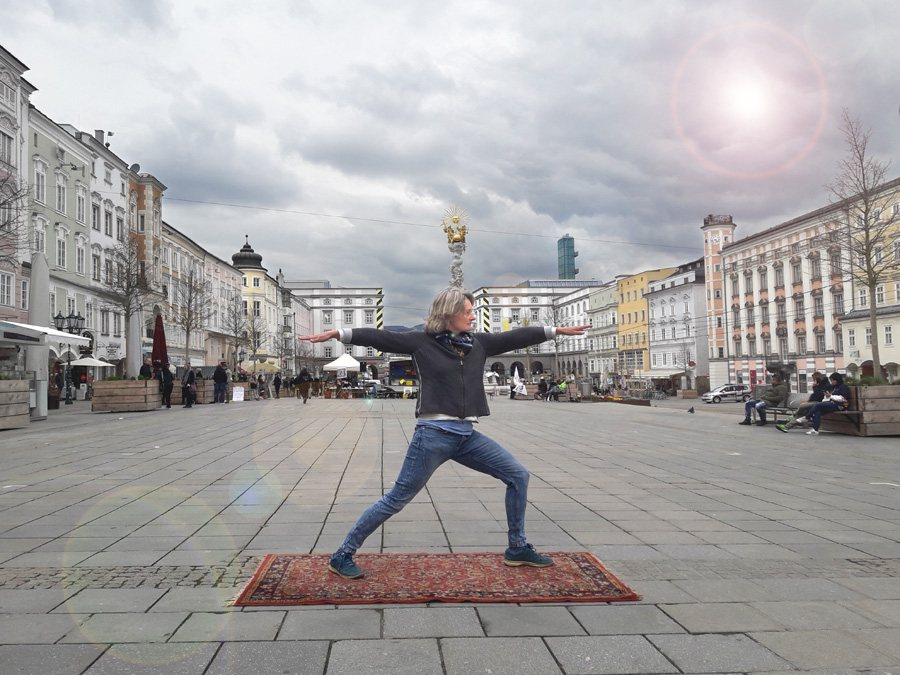
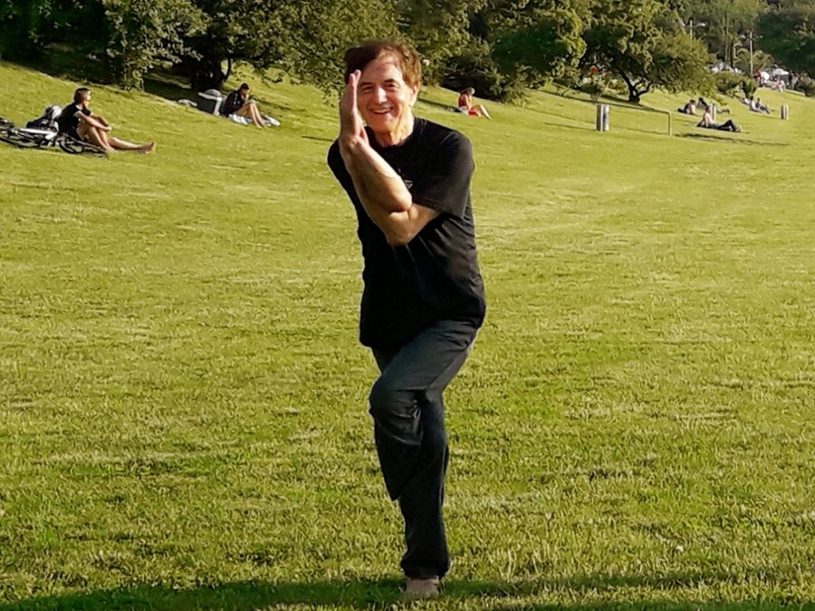
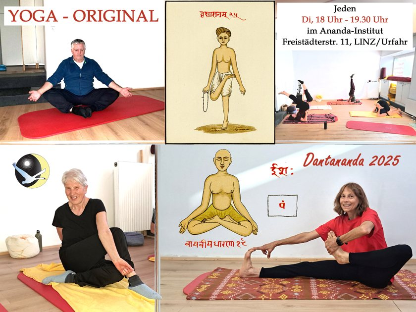
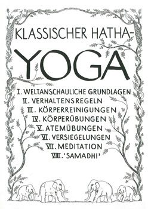
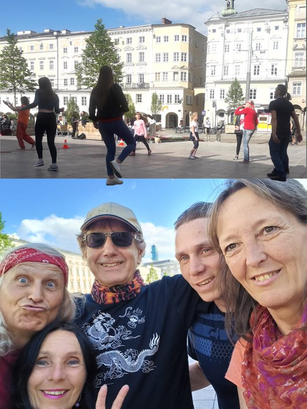
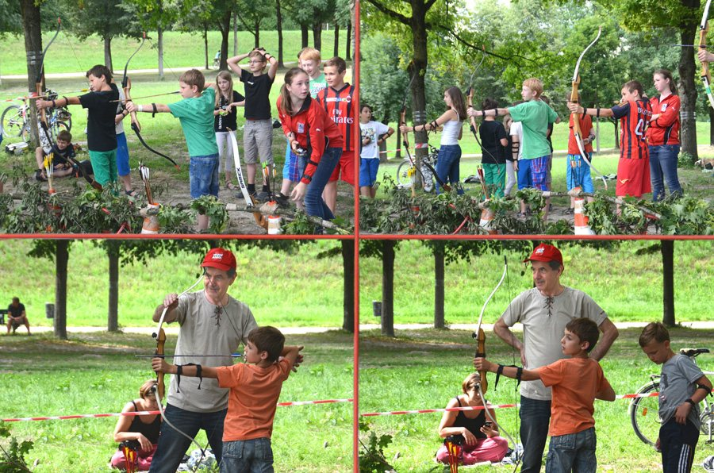
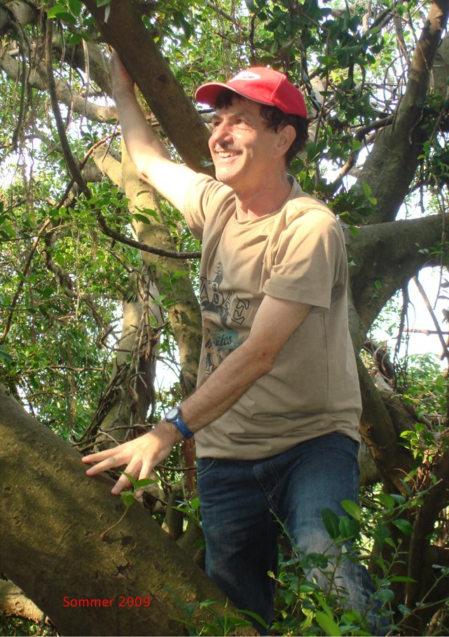

Yoga-Verein 77 · Österreichs erster Yoga-Verein
Original Hatha-Yoga in Linz – seit 1977.
Klassischer Hatha-Yoga nach den alten Quelltexten: Körperübungen, Atem, Mudras und Meditation. Für Anfänger und Fortgeschrittene.
- Jeden Dienstag, 18:00 – 19:30 Uhr
- ANANDA-Institut, Freistädter Straße 11, Linz-Urfahr
- 10er-Block € 135 · Einzelstunde € 16

Yoga-Original und Qi Gong & Yoga
- Yoga-Originalab Di, 27. Jänner 2026 · 7 Abende€ 77
- Qi Gong & Yogaab Di, 17. März 2026 · 7 Abende€ 77
- Beide Kurse – 14 Abendebei Vorauszahlung bis 19. Jänner€ 135
Kein beliebiges Gymnastikprogramm.
„Yoga“ ist heute die Bezeichnung für grenzenlose Beliebigkeit geworden. Es gibt aber eine überschaubare Überlieferung des Original-Hatha-Yoga – und genau die ist Inhalt unserer Kurse.
Sie dürfen sich einen sehr guten Ausgleich bei Stress und Bewegungsmangel erwarten, jahrhundertelang bewährte Übungen zur Belebung, Entspannung und Selbsterfahrung – und ganz besonders Gelenkigkeit und Geschmeidigkeit für mehr Bewegungsfreiheit im Alltag.
Mehr über Original-Yoga-
01
Asanas
Körperübungen
Die klassischen Stellungen, wie sie in den alten Texten beschrieben sind.
-
02
Kumbhakas
Atemtechniken
Atemlenkung und Atemverhaltung – das Herzstück des Hatha-Yoga.
-
03
Mudras
Siegel
Siegel und Verschlüsse (Bandhas), die Atem und Energie bündeln.
-
04
Dhyana
Meditation
Sammlung und Innenschau als Ziel aller Übungen.
„Hatha-Yoga bekämpft Krankheiten, verhindert frühes Altern und vorzeitigen Tod und bewahrt die Jugendlichkeit!“
Vom ersten Kurs bis zur Ausbildung.

Yoga-Kurse
Aufbauend in sechs Stufen – von „Yoga für Anfänger“ bis zum Yoga-Master-Kurs.
Kurse & Termine
Ausbildung
Original-Yoga-Lehrer (1 Jahr) und Yoga-Master (2 Jahre) mit Abschluss-Diplom.
Zur Ausbildung
Qi Gong & Atem
Die „Acht Schätze“, Atemtraining und Entspannung als Ergänzung zum Yoga.
Mehr erfahren
Bogenschießen
Meditatives Bogenschießen im Geiste von Zen und Tao – auch für Kinder.
Mehr erfahren
Leo Danter – Mahaleo Dantananda
Pionier des Yoga in Österreich. 1974 Gründungsmitglied des Deutschen Yoga-Lehrerverbandes und Kursleiter an der VHS München. 1976/77 gründete er den ersten Yoga-Verein Österreichs und hielt die ersten Yoga-Kurse in der Erwachsenenbildung und betrieblichen Gesundheitsförderung in Österreich – durchgehend bis heute.
- 1974
- Gründungsmitglied Deutscher Yoga-Lehrerverband
- 1977
- Gründung des Yoga-Vereins 77
- 6
- Kursstufen bis zum Yoga-Master
Kommen Sie vorbei.
Auskünfte und Anmeldungen gehen am schnellsten per Telefon. E-Mails werden nicht täglich gelesen – bitte haben Sie etwas Geduld.
0677 990 25 400oder 0732 / 79 25 60
Bitte mitbringen
- Trainingsanzug
- Decke
- rutschfeste Socken (für Qi Gong)
ANANDA-Institut
Freistädter Straße 114040 Linz-Urfahr
- Telefon0677 990 25 400
- Festnetz0732 / 79 25 60
- E-Mailyoga-original@outlook.com
- AnfahrtAuf der Karte zeigen